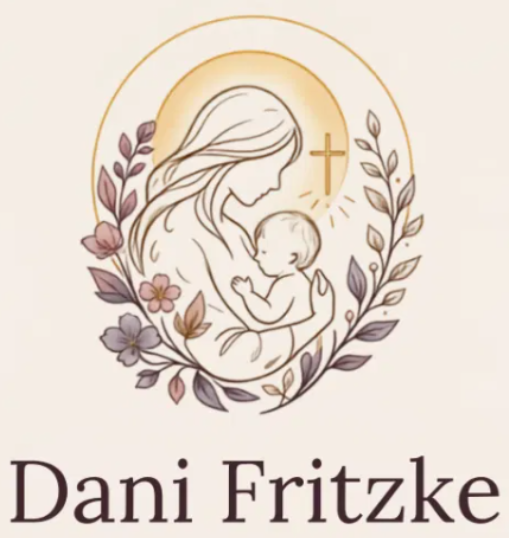

A casa tem dois ritmos: o do corpo e o da alma.
Eu ajudo os dois a baterem juntos — com criança no colo, panela no fogo e oração no meio da bagunça. Sem rotina de revista, sem mãe perfeita.

Quatro temas, uma casa só
Maternidade
Onde tudo acontece e tudo quebra. Não é um tema — é o cenário de todos os outros.
Fé
No que a gente se apoia: oração, jejum, gratidão, o domingo. O ritmo que sustenta a alma.
Espiritualidade
O que sobra quando o ritmo quebra: a culpa, o cansaço, a paciência, o silêncio.
Alimentação ancestral
Comida de verdade, feita em casa, no tempo dela — o cuidado que dá para ver na mesa.
A oração mais repetida do mundo pede comida — e pede por hoje. Sempre foi sobre ritmo.
Conteúdo recente
A manhã de 20 minutos que segura o meu dia
A rotina possível de quem acorda com criança pendurada: corpo, café e oração — nessa ordem, e sem heroísmo.
Ler →A geladeira das 22h. Não é fome.
O que eu descobri sobre a compulsão do fim do dia quando parei de tratar como fraqueza — e comecei a tratar como aviso.
Ler →Como eu rezo com criança gritando
Não é bonito, e funciona. O que restou da minha vida de oração depois que a maternidade desmontou a antiga.
Ler →A manhã que segura o dia — de presente
O guia gratuito de 20 minutos: corpo, café e oração, na ordem certa — com as variações para a vida que você tem, não a de revista.
Baixar o guia gratuito